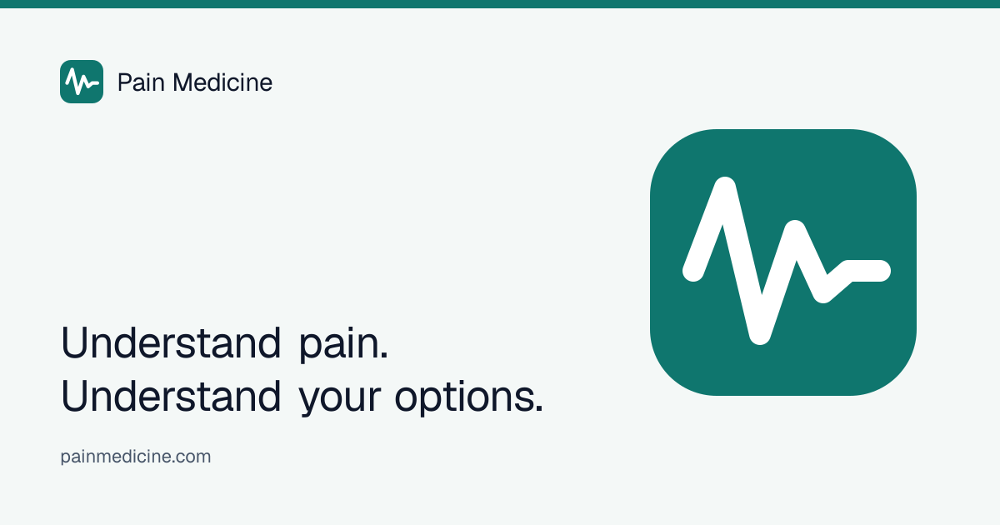

Size ramp
128
64
32
16 (tab)
On grounds
Paper
Ink

Teal field (signal only)
Header lockup
Pain Medicine
.com
Browser tab
Pain Medicine
Masks (PWA / social)
Rounded tile · any
Android squircle
Circle · X / GitHub
Share card · 1200×630

Do / don’t
Do
- Keep the rest line — that’s the settling.
- Use the teal tile in chrome (header, footer, favicon).
- Regenerate rasters with
npm run brand.
- Give maskable / circle crops the dedicated assets.
Don’t
- Redraw it as a heartbeat or ECG QRS.
- Recolor to red, “medical blue,” or a gradient.
- Stretch the signal into a line chart on share cards without the round joins.
- Hand-edit PNGs — the path in
src/lib/brand.ts is source.